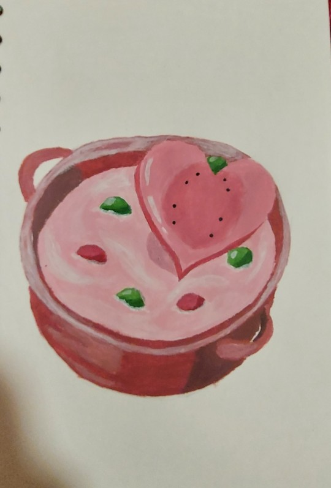

Creamy Heart Soup

Tired of getting your heart broken?
They say food is the way to the heart, and this recipe is the perfect example of that.
One bite of this delish and youll completely forget about that pesky broken heart and completely replenish your meter.
RECPIPE
- Hydromelon
- Voltfruit
- Fresh Lon Lon milk
- Big Hearty Radish
- (optional) Deku seeds
INSTRUCTIONS
- Heat the fresh milk in a pot for 15 minutes
- Slice the Voltfruit and Hydromelon together in a big bowl
- Add the sliced Voltfruit and Hydromelon to the hot milk
- Give the Big Hearty Radish a big hug and your sincerest gratitude
- Add the Big Hearty Radish to the other ingredients and stir for 3 minutes
- (optional) Add the Deku Seeds for some really flashy texture and flavor
- Serve on your most loved china and enjoy seeing you'r heartache leave you for good
back to main>